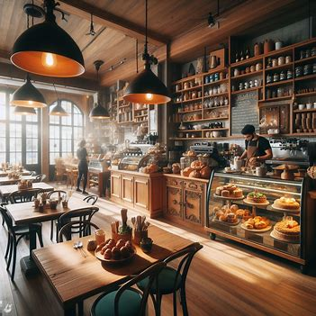
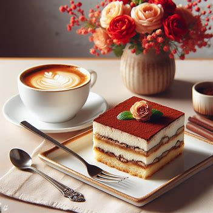
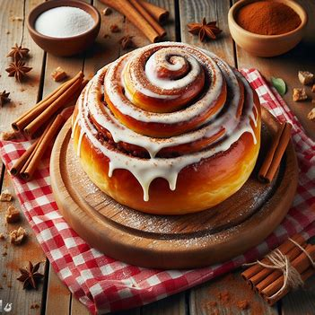

Home
  · Step into Pirozj Bakery, a charming bakery born from the passion and talent of an 18-year-old college student in the vibrant year of 2023. Nestled in the heart of town, this youthful haven is the brainchild of Adel Tkachuk, an aspiring entrepreneur with a penchant for turning ordinary her ideas into extraordinary delights. As the doors swing open, a symphony of enticing aromas welcomes you, leading to a cozy space adorned with pastel colors and a touch of modern flair—a reflection of Adel's unique blend of youthful creativity and contemporary design.
· Pirozj Bakery is not just a bakery; it's a culinary journey curated by a young innovator. Adel's dedication to her craft is evident in every detail, from the meticulously decorated cupcakes that beckon from the display to the artisanal pastries that boast a perfect balance of textures and flavors. The menu, crafted with a keen eye for trending tastes, offers delightful surprises, such as lavender-infused macarons and matcha-infused croissants, making each visit an exploration of inventive confections.

· What makes Pirozj Bakery truly special is the sense of community it fosters. Adel, with her infectious enthusiasm, transforms her bakery into a welcoming space for students and locals alike. From study sessions fueled by aromatic coffee to weekend baking workshops that encourage hands-on creativity, Pirozj Bakery is not just a place to savor delightful treats but a hub for connection, inspiration, and the realization of sweet dreams in every bite. Come and experience the magic of a bakery where age is no barrier to creating a world of flavor, passion, and boundless possibilities.